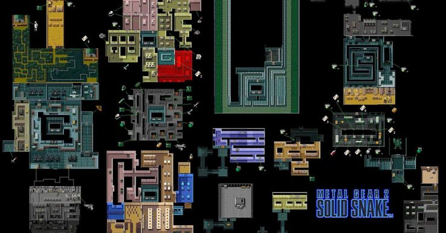

3 Predict Games
1.Madden Predict The Results Of The Super
Bowl
EA's Madden games provide a prediction of who is going to win the Super Bowl each year. The game has a super impressive track record of successfully predicting the outcome of the Super Bowl nine out of thirteen times. This is not a perfect prediction record, of course, but they did get fairly close to the actual scores of the game. They may, in fact, run better without any players taking part. Madden also touts one of the most accurate player ranking systems out there right now.
You can play Sudoku online, on an app, or on paper. Look for a regular Sudoku in your newspaper, buy a book with a collection of puzzles, or download a free app for your phone or tablet.
Sudoku puzzles are available in varying degrees of difficulty. When you're starting out, play the easy games until you learn the rules. If you're playing on paper, use a pencil!
2.Alpha Centauri Predicts Mapping The Human
Genome
It's pretty exciting when humanity is actually able to catch up with fairly "futuristic" science in a video game. Sid . This PC game allowed players to do something scientists at the time could only dream of, which was to map the human genome.
in the game, which, once players achieved a knowledge of Biogenetics, they were able to map the human genome. It also gave them a talent stat boost in every one of their bases and protected the population from viral outbreaks.
3.Solid Snake Predicts Use Of Algae As Fuel
Creator Hideo Kojima seemed to have some highly progressive ideas for his game series. Solid Snake is set in a world where there is a severe oil crisis where gasoline is scarce, with the entire nation fighting over the last vestiges. The game's solution is an algae that produces fuel as a byproduct. The algae, named Botryococcus braunii, created OILIX, as they produce high-quality petroleum after they photosynthesize.